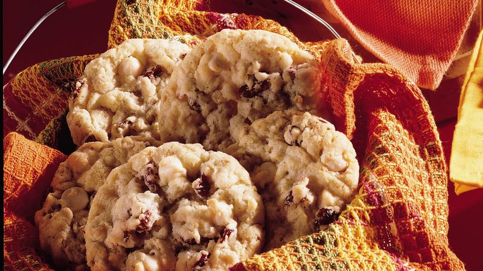

WE ARE STARVING FOR COOKIES
We want cookies
(please)
Cranberry and Vanilla Chip Cookies
Ingredients
- 1/2 cup butter, softened
- 1 1/3 cups sugar
- 2 eggs
- 1 tsp imitation butter flavor
- 1 3/4 cups of all purpose flour
- 1 cup rolled oats
- 1 1/2 tsp baking soda
- 1/2 tsp salt
- 1 cup sweetened dried cranberries
- 2/3 cup white vanilla chips
Directions
- Heat oven to 350F
- Spray cookie sheets with nonstick cooking spray
- In a large bowl, combine butter and sugar, beat till light and fluffy
- Add eggs and butter falvor; mix well
- Add flour, oats, baking soda, and salt; mix well
- Stir in cranberries amd vanilla chips
- Drop dough be tablesponnfuls 2 inches apart onto sprayed cookies sheets
- Bake for 9 to 11 minutes, or until edges are golden brown.
- Remove from oven. Cool for 1 min; remove for sheet to cool for 15 mins on wire racks
